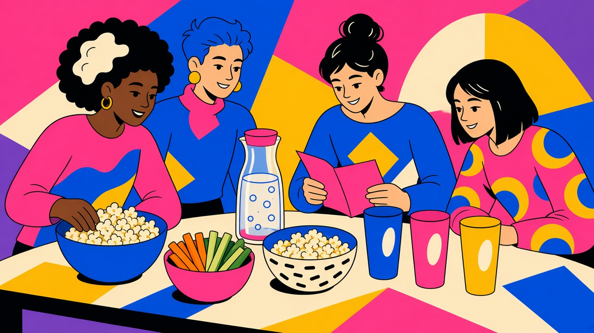
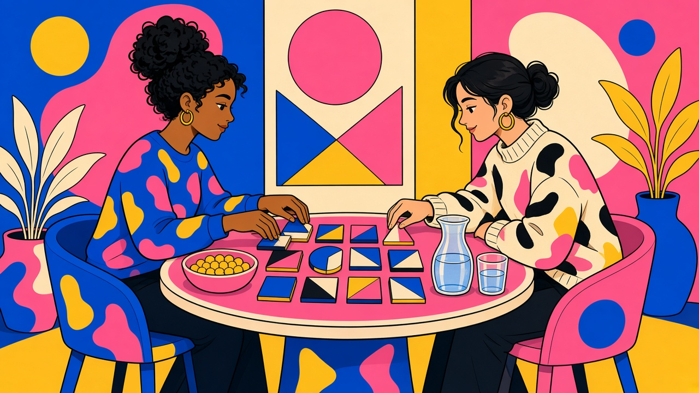
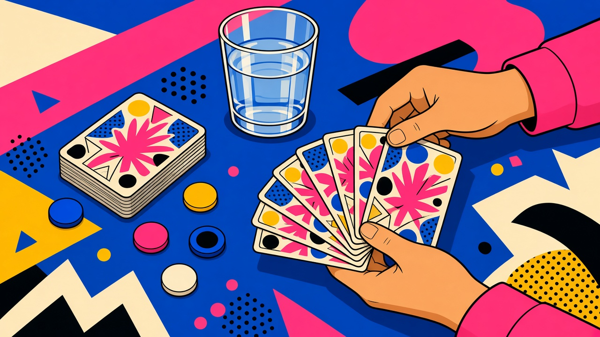
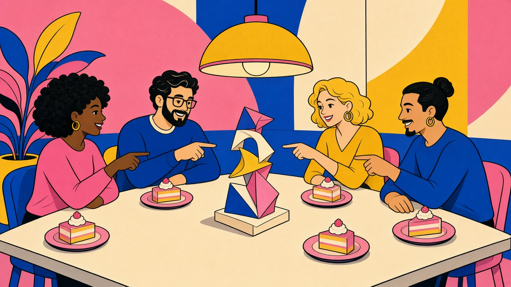
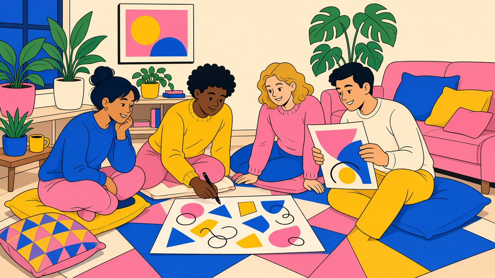
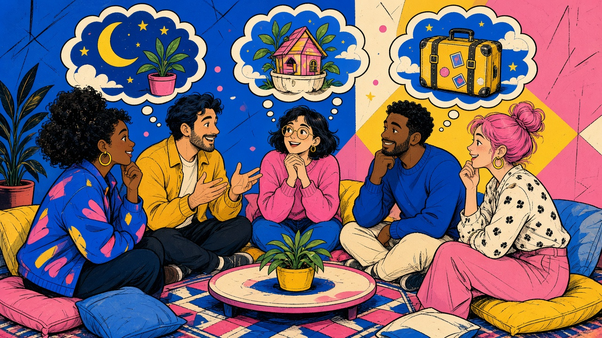
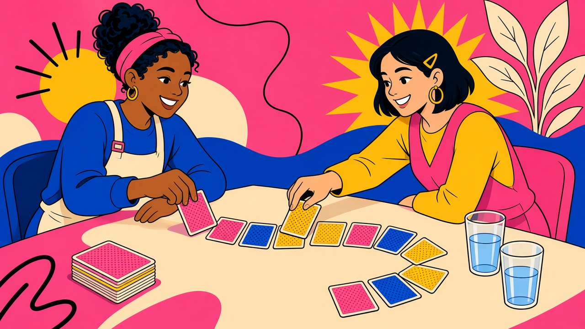
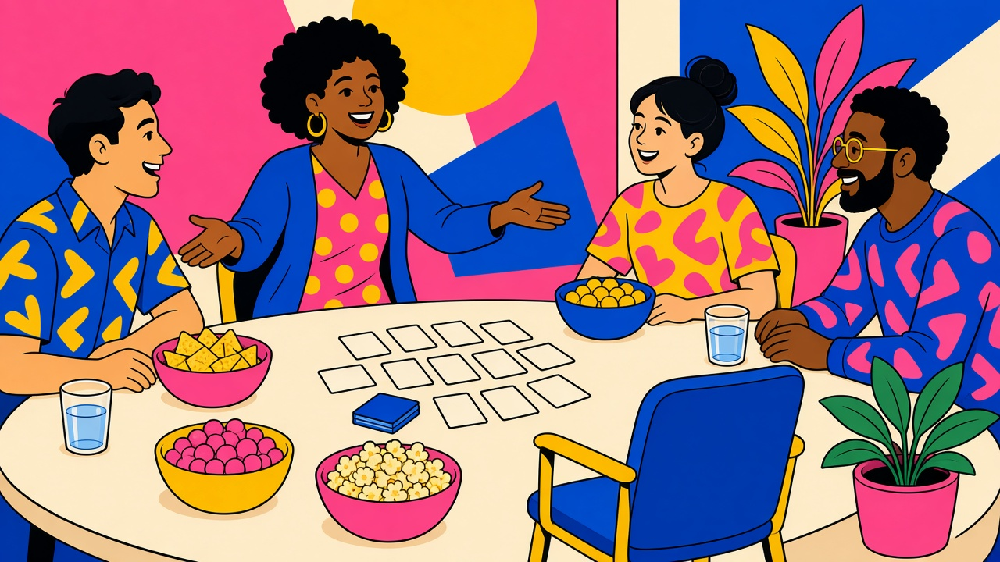
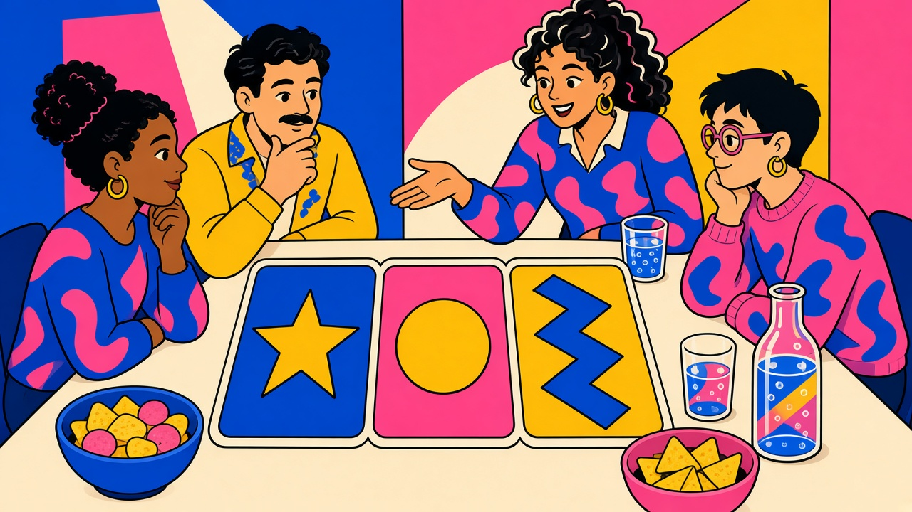

Guides
TipsyPlay Blog
Short, practical guides for adult game nights, with non-alcoholic options and a real way to pass.
You must be of legal drinking age in your location.
Editorial suggestions: Table activities in the newer guides are ideas for your own night. They are not extra modes inside the TipsyPlay app. Passing is always allowed. Water, soft drinks and alcohol-free play are full options. Nothing stacks.
Nov 5, 2026
10 Best Card Drinking Games for Adults (With Non-Alcoholic Options)
Ten beginner-friendly card drinking games, each with a sip-or-swap alternative, plus hosting tips and links to play on TipsyPlay.
Card drinking gamesGames for adults
Read post
Prepared 7 Nov 2026

How to Host an Alcohol-Free Party Game Night
A running order for four to eight adults: a fictional café round, a paper story, and an optional phone round. Alcohol-free from the invitation.
HostingEditorial guide
Read post
Prepared 7 Nov 2026

Games for 2: A No-Pressure Night-In Plan
A two-person plan: invent uses for a harmless object, build a tiny paper gallery, and optionally try Card Lottery, whose score counts correct colors.
Games for 2Editorial guide
Read post
Prepared 7 Nov 2026

Party Icebreakers for Adults Who Just Met
Three fictional icebreakers for four to eight adults who just met. Each one has a pass, an ending, and no questions about work or dating.
IcebreakersEditorial guide
Read post
Prepared 7 Nov 2026

Card Drinking Games: Set Friendly House Rules Before You Deal
Say the agreement before the first card: opt in, separate drinks from the deck, and read what King's Cup and Card Lottery actually put on screen.
House rulesEditorial guide
Read post
Prepared 7 Nov 2026

After-Dinner Games for Adults That Keep Everyone Seated
Three seated games after the plates are cleared: a paper sculpture, a fictional dessert pitch, and a one-line object postcard.
After dinnerEditorial guide
Read post
Prepared 7 Nov 2026

Quiet Party Games for an Apartment Night In
Three quiet paper games for three to six adults: a drawing exchange, a written museum, and one clue at a time. No timers and no shouting.
ApartmentEditorial guide
Read post
Prepared 7 Nov 2026

Story Game Prompts for Adults: Start Small, Get Weird
Six original starters and a two-circuit spoken ending you run yourselves, plus what Story Chain actually does when you open it on phones.
Story gamesEditorial guide
Read post
Prepared 7 Nov 2026

Two-Player Card Games Without Drinking Penalties
Two original deck activities for a pair: build a shared suit path, or give three truthful clues. No drinking penalties, and neither one is a TipsyPlay mode.
Card gamesEditorial guide
Read post
Prepared 7 Nov 2026

Drop-In Party Games: Welcome Late Arrivals Without Restarting
Short, standalone rounds, so a late arrival jumps into the next one instead of catching up. A new phone can't join once a game has started, but the host can tap Restart with same game for a fresh code.
HostingEditorial guide
Read post
Prepared 7 Nov 2026

How to Choose a Party Game for Your Group Tonight
Four questions for tonight: who is actually playing, how much energy is left, what equipment you have, and what should stay off the table.
Choosing a gameEditorial guide
Read post